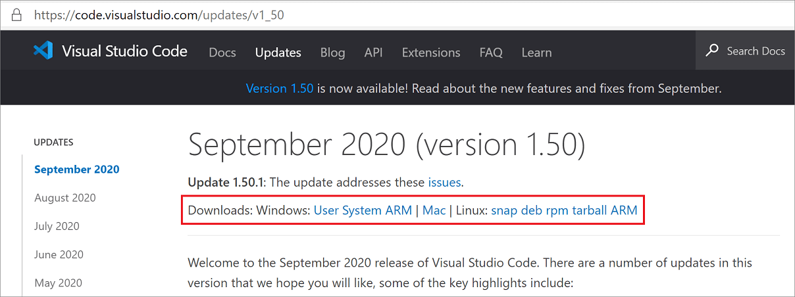
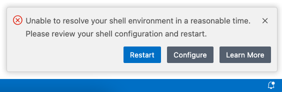

Visual Studio Code 常见问题解答
我们的文档中包含了针对特定主题所需的常见问题部分。我们在这里汇总了那些不适合放在其他主题中的内容。
如果你在这里没有找到问题的答案，请查看我们之前在 GitHub 上报告的问题以及我们的发布说明。
VS Code 中 AI 的开源化
我们已根据 MIT 许可证将 GitHub Copilot Chat 扩展开源，并正在将相关组件引入 VS Code 核心。请阅读我们的公告博客文章和首个里程碑更新了解所有详细信息。
这会影响我当前的 GitHub Copilot 订阅吗？GitHub Copilot 现在免费了吗？
此更改不会影响当前的 GitHub Copilot 订阅。要使用 GitHub Copilot，你仍然需要拥有 GitHub 帐户以及 GitHub Copilot 订阅的访问权限。
无法通过组织或企业访问 Copilot 的独立开发者可以使用 GitHub Copilot 免费计划（可能有限制）。如果该计划不能满足你的需求，你可以注册 Copilot 付费计划或使用你自己的模型密钥。
GitHub Copilot 后端服务也会开源吗？
GitHub Copilot 服务不受影响，将保持闭源。
时间线是怎样的？我何时可以为 VS Code 中的 AI 体验做出贡献？
我们已通过将 GitHub Copilot Chat 扩展开源，完成了该过程的第一步。源代码可在 microsoft/vscode-copilot-chat 仓库中获取。
在接下来的几个月中，我们将把 Copilot Chat 扩展的相关组件引入 VS Code 核心仓库。请查看我们的计划事项以了解时间线的详细信息和更新。
我们的目标是使为我们的 AI 功能做出贡献的体验像为 VS Code 的任何部分做出贡献一样简单。作为其中的一部分，我们希望在贡献时能够使用 Copilot 后端服务进行调试和测试。
请查看 CONTRIBUTING.md 文件，了解有关如何贡献的详细信息。
为什么将 GitHub Copilot 集成到 VS Code 核心仓库中？
自 GitHub Copilot 首次发布以来，AI 驱动的工具显然已成为我们编写代码的核心。从使用遥测数据中，我们可以看到，在 VS Code 中使用 AI 功能的用户实际上比使用调试或测试等其他功能的用户更多。
将 AI 功能作为 VS Code 的核心部分，重申了我们的信念，即公开协作的工作方式能为用户带来更好的产品，并培育多样化的扩展生态系统。
我是一名扩展作者。我会受到什么影响？
我们对稳定 API 保持向后兼容性。你的扩展不应受到任何影响。
我们根据扩展作者的反馈不断改进和扩展 VS Code 扩展 API。如果你需要额外的 API 来使你的扩展成功，我们很乐意听取你的意见——请在 microsoft/vscode 仓库中提交 API 请求。
我已在 VS Code 中使用其他 AI 编码扩展（Cline、Roo Code 等）。这对我有什么影响？
你可以继续在 VS Code 中使用这些扩展！
我们非常欢迎社区构建扩展来改善 VS Code 中的开发者体验。
为了改善其他 AI 扩展的体验，我们不断添加 API，例如用于从扩展直接调用语言模型的语言模型 API，用于与语言模型工具交互并与内置或你自己的代理集成的工具 API，或用于运行终端命令并与之交互的 Shell Execution API（特别适用于代理体验）。展望未来，我们计划添加更多 API 以满足扩展作者的需求。
这会改变你们收集数据的方式吗？
不会，没有任何改变。通过将 GitHub Copilot Chat 开源，我们使其数据收集方式完全透明，并让你能够在源代码中验证这一点。详细了解 VS Code 中的遥测和 GitHub Copilot 信任中心。
VS Code 团队将如何在未来版本中优先安排 AI 功能和非 AI 功能？
我们相信 AI 驱动的工具是我们编写代码的核心。我们同时投资于 AI 功能和改进核心编辑器体验。这也反映在团队在 AI 与其他功能方面 50/50% 的分工上。
许多非 AI 功能可能对用户来说并不总是那么明显，例如性能、安全性、辅助功能、Electron 更新等。
将 AI 功能引入 VS Code 核心仓库会影响 VS Code 的（启动）性能吗？
性能是我们的核心优先事项，我们致力于在集成 AI 功能的同时保持 VS Code 的性能。此外，如果你不在 VS Code 中启用 AI 功能，则不会有相关的后台进程运行，从而不会影响性能。
我可以禁用 VS Code 中的 AI 功能吗？
你可以通过 setting(chat.disableAIFeatures) 设置来禁用 VS Code 中的内置 AI 功能，类似于在 VS Code 中配置其他功能的方式。这将禁用并隐藏 VS Code 中的聊天或内联建议等功能，并禁用 Copilot 扩展。你可以在工作区或用户级别配置此设置。
或者，使用标题栏聊天菜单中的了解如何隐藏 AI 功能操作来访问该设置。
[!NOTE]
如果你之前已禁用内置 AI 功能，在更新到新版本的 VS Code 时，你的选择会得到保留。
如果我在 VS Code 中禁用 AI 功能，我的数据还会发送给 Microsoft 吗？
不会，如果你在 VS Code 中禁用 AI 功能，或者不从 VS Code 登录你的 Copilot 订阅，你的数据不会发送到 Copilot 后端服务。详细了解 VS Code 中的遥测和 GitHub Copilot 信任中心。
VS Code 在 Copilot 扩展中使用的模型是开源（OSS）的吗？
不是。GitHub Copilot 使用的模型是单独许可的，这一点不会改变。事实上，这些模型大部分来自第三方，例如 OpenAI、Anthropic 和 Google…
Visual Studio Code 与 Visual Studio IDE 有什么区别？
Visual Studio Code 是一个精简的代码编辑器，支持调试、任务运行和版本控制等开发操作。它旨在仅提供开发者在快速代码-构建-调试循环中所需的工具，并将更复杂的工作流留给功能更全面的 IDE，例如 Visual Studio IDE。
VS Code 是免费的吗？
是的，VS Code 对私人或商业用途都是免费的。详情请参阅产品许可证。
如果你尚未拥有 Copilot 订阅，可以注册 Copilot 免费计划免费使用 Copilot，并获得每月的内联建议和 AI 额度。
平台支持
支持哪些操作系统？
VS Code 可在 macOS、Linux 和 Windows 上运行。请参阅要求文档了解支持的版本。你可以在设置概览中找到更多平台特定的详细信息。
我可以在旧版 Windows 上运行 VS Code 吗？
Microsoft 已结束对 Windows 7、Windows 8 和 Windows 8.1 的支持，不再为其提供安全更新。从 1.71（2022 年 8 月）版本开始的 VS Code 桌面版将不再在 Windows 7 上运行，从 1.80（2023 年 6 月）版本开始将不再在 Windows 8 和 8.1 上运行。你需要升级到更新的 Windows 版本才能使用更高版本的 VS Code。
VS Code 将不再为旧版 Windows 提供产品更新或安全修复。VS Code 版本 1.70.3 是 Windows 7 用户可用的最后一个版本，版本 1.79 将是 Windows 8 和 8.1 用户可用的最后一个版本。你可以在 support.microsoft.com 上了解有关升级 Windows 版本的更多信息。
此外，Windows 10 版本 2004 已停止 32 位 OEM 支持。支持 Windows 32 位的最后一个稳定 VS Code 版本是 1.83（2023 年 9 月）。你需要更新到 64 位版本。
我可以在旧版 macOS 上运行 VS Code 吗？
从 1.105（2025 年 9 月）版本开始的 VS Code 桌面版将弃用对 macOS Big Sur（版本 11.0 及更早版本）的支持。从 VS Code 1.107（2025 年 11 月）开始，我们将停止在 macOS Big Sur（版本 11.0 及更早版本）上更新 VS Code。你需要升级到更新的 macOS 版本才能使用更高版本的 VS Code。
VS Code 将不再为 macOS Big Sur（版本 11.0 及更早版本）提供产品更新或安全修复，VS Code 版本 1.106 将是 macOS Big Sur（11.0 及更早版本）可用的最后一个版本。你可以在 support.apple.com 上了解有关升级 macOS 版本的更多信息。
我可以在旧版 Linux 发行版上运行 VS Code 吗？
从 VS Code 1.86.1 版本（2024 年 1 月）开始，VS Code 桌面版仅与基于 glibc 2.28 或更高版本的 Linux 发行版兼容，例如 Debian 10、RHEL 8 或 Ubuntu 20.04。
如果你无法升级 Linux 发行版，推荐的替代方案是使用我们的 Web 客户端。如果你希望使用桌面版，可以从此处下载 VS Code 1.85 版本。根据你的平台，请确保禁用更新以保持在该版本上。一个好的建议是使用便携模式来设置安装。
我可以运行 VS Code 的便携版本吗？
是的，VS Code 具有便携模式，可让你将设置和数据保存在与安装位置相同的位置，例如在 USB 驱动器上。
遥测和崩溃报告
如何禁用遥测报告
VS Code 收集使用数据并将其发送给 Microsoft，以帮助改进我们的产品和服务。请阅读我们的隐私声明和遥测文档了解更多信息。
如果你不想向 Microsoft 发送使用数据，可以将 setting(telemetry.telemetryLevel) 用户设置设为 off。
从文件 > 首选项 > 设置中，搜索 telemetry，然后将遥测：遥测级别设置设为 off。这将从此静默来自 VS Code 的所有遥测事件。
重要通知：VS Code 为你提供了安装 Microsoft 和第三方扩展的选项。这些扩展可能收集其自身的使用数据，并且不受 setting(telemetry.telemetryLevel) 设置的控制。请查阅特定扩展的文档以了解其遥测报告。
如何禁用实验
VS Code 使用实验来试用新功能或逐步推出它们。我们的实验框架会调用 Microsoft 拥有的服务，因此在禁用遥测时也会被禁用。但是，如果你希望无论遥测偏好如何都禁用实验，可以将 setting(workbench.enableExperiments) 用户设置设为 false。
从文件 > 首选项 > 设置中，搜索 experiments，然后取消选中工作台：启用实验设置。这将阻止 VS Code 调用该服务，并选择退出所有正在进行的实验。
如何禁用崩溃报告
VS Code 收集有关发生的任何崩溃的数据，并将其发送给 Microsoft，以帮助改进我们的产品和服务。请阅读我们的隐私声明和遥测文档了解更多信息。
如果你不想向 Microsoft 发送崩溃数据，可以将 setting(telemetry.telemetryLevel) 用户设置更改为 off。
从文件 > 首选项 > 设置中，搜索 telemetry，然后将遥测：遥测级别设置设为 off。这将静默来自 VS Code 的所有遥测事件，包括崩溃报告。你需要重启 VS Code 才能使设置更改生效。
GDPR 与 VS Code
随着《通用数据保护条例》(GDPR) 的生效，我们希望借此机会重申我们对隐私的高度重视。这适用于 Microsoft 整体公司层面，也特别适用于 VS Code 团队。
为支持 GDPR：
- VS Code 产品通知所有用户他们可以选择退出遥测数据收集。
- 团队积极审查和分类所有发送的遥测数据（载于我们的开源代码库中）。
- 对收集的任何数据（例如崩溃转储）都实施了有效的数据保留策略。
你可以在遥测文档中了解有关 VS Code GDPR 合规性的更多信息。
VS Code 使用哪些在线服务？
除了崩溃报告和遥测之外，VS Code 还将在线服务用于各种其他目的，例如下载产品更新、查找、安装和更新扩展，或在设置编辑器中提供自然语言搜索。你可以在管理在线服务中了解更多信息。
你可以选择开启/关闭使用这些服务的功能。从文件 > 首选项 > 设置中，输入标签 @tag:usesOnlineServices。这将显示所有控制在线服务使用情况的设置，你可以单独切换它们。
许可
位置
你可以在 VS Code 安装位置下的 resources\app 文件夹中找到 VS Code 许可证、第三方声明和 Chromium 开源贡献列表。VS Code 的 ThirdPartyNotices.txt、Chromium 的 Credits_*.html 以及 VS Code 的英文 LICENSE.txt 位于 resources\app 下。按语言 ID 本地化的 LICENSE.txt 版本位于 resources\app\licenses 下。
为什么 Visual Studio Code 产品与 vscode GitHub 仓库的许可证不同？
要了解为什么 Visual Studio Code 产品与开源 vscode GitHub 仓库具有不同的许可证，请参阅问题 #60 以获取详细说明。
vscode 仓库与 Microsoft Visual Studio Code 发行版有什么区别？
github.com/microsoft/vscode 仓库（Code - OSS）是我们开发 Visual Studio Code 产品的地方。我们不仅在那里编写代码和处理问题，还发布我们的路线图以及迭代和收尾计划。源代码在标准 MIT 许可证下对所有人开放。
Visual Studio Code 是 Code - OSS 仓库的一个发行版，包含 Microsoft 特定的自定义项（包括源代码），在传统的 Microsoft 产品许可证下发布。
有关更多详细信息，请参阅 Visual Studio Code 与 'Code - OSS' 的区别文章。
"基于开源构建"是什么意思？
Microsoft Visual Studio Code 是 'Code - OSS' 的一个 Microsoft 许可发行版，包含 Microsoft 专有资产（例如图标）和功能（Visual Studio Marketplace 集成、启用远程开发的小部分内容）。虽然这些添加内容只占整体发行版代码库的极小比例，但由于这些差异，更准确的说法是 Visual Studio Code 是"基于"开源构建的，而不是"是"开源的。有关每个发行版包含内容的更多信息，请参阅 Visual Studio Code 与 'Code - OSS' 的区别文章。
扩展
所有 VS Code 扩展都是开源的吗？
扩展作者可以自由选择适合其业务需求的许可证。虽然许多扩展作者选择在开源许可证下发布其源代码，但有些扩展如 Wallaby.js、Google Cloud Code 和 VS Code 远程开发扩展 使用专有许可证。
在 Microsoft，我们有开源和闭源扩展的混合。依赖于现有专有源代码或库、涉及 Microsoft 许可工具或服务的源代码（例如，C# DevKit 扩展使用 Visual Studio 订阅许可证模式，请参阅许可证），以及 Microsoft 内部不同业务模式的差异，可能导致某些扩展选择专有许可证。你可以在 Microsoft 扩展许可证文章中查找 Microsoft 贡献的 Visual Studio Code 扩展及其源代码许可证的列表。
如何查找扩展的许可证？
大多数扩展会在其 Marketplace 页面（"自述文件"文档）上提供许可证链接，位于右侧列的资源下。如果你找不到链接，可以在该扩展的仓库（如果它是公开的）中找到许可证，或者你可以通过 Marketplace 的问答部分联系扩展作者。
我可以在 VS Code 之外使用 Microsoft 扩展吗？
不可以。虽然 Microsoft 扩展的源代码可能是开源的，但我们不会授权从 Visual Studio Marketplace 发布和获取的 Microsoft 或其关联公司的扩展在 Visual Studio 产品系列之外使用，该产品系列包括：Microsoft Visual Studio、Visual Studio Code、GitHub Codespaces、Azure DevOps、Azure DevOps Server 以及由我们和 Microsoft 关联公司（例如 GitHub, Inc.）提供的后续产品和服务。我们仅在 Visual Studio 产品系列中构建、测试、部署和支持这些扩展和服务，以确保它们符合我们的安全和质量标准。我们不会在其他地方这样做，包括在 Code - OSS 仓库的分支上构建的产品。有关更多信息，请参阅 Visual Studio Marketplace 服务条款中的_条件：Marketplace/NuGet 产品的使用权限_。
我无法从产品 << 请填写产品名称 >> 访问 Visual Studio Marketplace，为什么？
我们仅将 Visual Studio Marketplace 提供给 Visual Studio 产品系列使用：Microsoft Visual Studio、Visual Studio Code、GitHub Codespaces、Azure DevOps、Azure DevOps Server 以及由我们和 Microsoft 关联公司（例如 GitHub, Inc.）提供的后续产品和服务。因此，替代产品（包括那些基于 Code - OSS 仓库分支构建的产品）不被允许访问 Visual Studio Marketplace。我们这样做是为了保护生态系统的安全性和质量，包括以下措施：
- 扩展在产品的上下文中以产品的权限运行，它们可能包含可执行代码。Marketplace 会对每个扩展进行审查以确保安全性，并防止它们执行恶意活动。当你使用 Visual Studio 系列产品安装扩展时，你知道它已经过审查，可以在该上下文中运行。
- 当恶意扩展被报告并验证，或扩展依赖项中发现了漏洞时，该扩展将从 Marketplace 中移除，添加到阻止列表，并由 VS Code 自动卸载。
- Microsoft 在运行、维护和保护这个全球在线服务方面投入了大量资源。Visual Studio 系列产品旨在以安全可靠的方式访问 Marketplace，以便在你需要时 Marketplace 始终可用。
- 扩展可能与产品深度集成。Marketplace 确保我们保持 API 兼容性，并且扩展正确使用产品的扩展 API。这有助于确保你安装的扩展在版本更新中正常工作。
有关此主题的更多详细信息，请参阅 #31168。
为什么要从 Visual Studio Marketplace 安装扩展？
从 Visual Studio Marketplace 安装扩展相比从其他来源安装具有许多优势。
- Visual Studio Marketplace 采用多种机制来保护你免受恶意扩展的侵害，包括恶意软件扫描、动态检测、发布者验证等。当你从其他来源安装扩展时，无法保证该扩展在你的上下文中运行是安全的。
- 当恶意扩展被报告并验证，或扩展依赖项中发现了漏洞时，该扩展将从 Marketplace 中移除，添加到阻止列表，并由 VS Code 自动卸载。
- Marketplace 使你能够轻松查找、安装和更新扩展。当有更新可用时（例如由于安全修复），VS Code 会自动安装更新版本。
- 扩展可能与产品深度集成。Marketplace 确保我们保持 API 兼容性，并且扩展正确使用产品的扩展 API。这有助于确保你安装的扩展在版本更新中正常工作。
报告 VS Code 扩展的问题
对于错误、功能请求或联系扩展作者，你应使用 Visual Studio Code Marketplace 中提供的链接，或使用命令面板中的帮助：报告问题。但是，如果存在扩展不遵守我们行为准则的问题，例如包含亵渎内容、色情内容或对用户构成风险，那么我们有一个用于报告问题的电子邮件别名。收到邮件后，我们的 Marketplace 团队将会研究适当的处理方案，直至包括取消发布该扩展。
VS Code 版本
如何查找我当前的 VS Code 版本？
你可以在关于对话框中找到 VS Code 版本信息。
在 macOS 上，转到代码 > 关于 Visual Studio Code。
在 Windows 和 Linux 上，转到帮助 > 关于。
VS Code 版本是列出的第一个版本号，格式为 '主版本.次版本.修订版本'，例如 '1.100.0'。
以前的发行版本
你可以在版本发布说明的顶部找到一些版本下载的链接：

如果你需要的安装类型未在其中列出，可以通过以下 URL 手动下载：
下载类型 | URL
--- | ---
Windows x64 系统安装程序 | https://update.code.visualstudio.com/{version}/win32-x64/stable
Windows x64 用户安装程序 | https://update.code.visualstudio.com/{version}/win32-x64-user/stable
Windows x64 zip | https://update.code.visualstudio.com/{version}/win32-x64-archive/stable
Windows x64 CLI | https://update.code.visualstudio.com/{version}/cli-win32-x64/stable
Windows Arm64 系统安装程序 | https://update.code.visualstudio.com/{version}/win32-arm64/stable
Windows Arm64 用户安装程序 | https://update.code.visualstudio.com/{version}/win32-arm64-user/stable
Windows Arm64 zip | https://update.code.visualstudio.com/{version}/win32-arm64-archive/stable
Windows Arm64 CLI | https://update.code.visualstudio.com/{version}/cli-win32-arm64/stable
macOS 通用版 | https://update.code.visualstudio.com/{version}/darwin-universal/stable
macOS Intel 芯片 | https://update.code.visualstudio.com/{version}/darwin/stable
macOS Intel 芯片 CLI | https://update.code.visualstudio.com/{version}/cli-darwin-x64/stable
macOS Apple 芯片 | https://update.code.visualstudio.com/{version}/darwin-arm64/stable
macOS Apple 芯片 CLI | https://update.code.visualstudio.com/{version}/cli-darwin-arm64/stable
Linux x64 | https://update.code.visualstudio.com/{version}/linux-x64/stable
Linux x64 debian | https://update.code.visualstudio.com/{version}/linux-deb-x64/stable
Linux x64 rpm | https://update.code.visualstudio.com/{version}/linux-rpm-x64/stable
Linux x64 snap | https://update.code.visualstudio.com/{version}/linux-snap-x64/stable
Linux x64 CLI | https://update.code.visualstudio.com/{version}/cli-linux-x64/stable
Linux Arm32 | https://update.code.visualstudio.com/{version}/linux-armhf/stable
Linux Arm32 debian | https://update.code.visualstudio.com/{version}/linux-deb-armhf/stable
Linux Arm32 rpm | https://update.code.visualstudio.com/{version}/linux-rpm-armhf/stable
Linux Arm32 CLI | https://update.code.visualstudio.com/{version}/cli-linux-armhf/stable
Linux Arm64 | https://update.code.visualstudio.com/{version}/linux-arm64/stable
Linux Arm64 debian | https://update.code.visualstudio.com/{version}/linux-deb-arm64/stable
Linux Arm64 rpm | https://update.code.visualstudio.com/{version}/linux-rpm-arm64/stable
Linux Arm64 CLI | https://update.code.visualstudio.com/{version}/cli-linux-arm64/stable
将你想要的特定版本替换到 {version} 占位符中。例如，要下载 1.83.1 的 Linux Arm64 debian 版本，你可以使用
https://update.code.visualstudio.com/1.83.1/linux-deb-arm64/stable如果你希望始终下载最新的 VS Code 稳定版本，可以使用版本字符串 latest。
Windows 32 位版本
Windows x86 32 位版本在 1.83 版本之后不再受到积极支持，并可能带来安全风险。
下载类型 | URL
--- | ---
Windows x86 系统安装程序 | https://update.code.visualstudio.com/{version}/win32/stable
Windows x86 用户安装程序 | https://update.code.visualstudio.com/{version}/win32-user/stable
Windows x86 zip | https://update.code.visualstudio.com/{version}/win32-archive/stable
Windows x86 CLI | https://update.code.visualstudio.com/{version}/cli-win32-ia32/stable
预发布版本
想提前了解 VS Code 的新功能？你可以通过安装 "Insiders" 构建版来试用 VS Code 的预发布版本。Insiders 构建版与你现有的稳定版 VS Code 并行安装，并具有独立的设置、配置和扩展。Insiders 构建版每晚更新，因此你将获得前一天的最新错误修复和功能更新。
要安装 Insiders 构建版，请前往 Insiders 下载页面。
如何选择退出 VS Code 自动更新？
默认情况下，VS Code 设置为在我们发布新更新时为 macOS 和 Windows 用户自动更新。如果你不希望获得自动更新，请将更新：模式设置 (setting(update.mode)) 从 default 更改为 none。
要修改更新模式，请转到文件 > 首选项 > 设置，搜索 update mode 并将设置更改为 none。
如果你使用 JSON 编辑器进行设置，请添加以下行：
{
"update.mode": "none"
}你可以通过卸载当前版本，然后安装特定发布说明页面顶部提供的下载来安装 VS Code 的以前版本。
[!NOTE]
在 Linux 上：如果 VS Code 仓库已正确安装，那么你的系统包管理器应以与系统上其他软件包相同的方式处理自动更新。请参阅在 Linux 上安装 VS Code。
选择退出扩展更新
默认情况下，VS Code 也会在新版本可用时自动更新扩展。如果你不希望扩展自动更新，可以在设置编辑器 (kb(workbench.action.openSettings)) 中清除扩展：自动更新设置 (setting(extensions.autoUpdate))。
如果你使用 JSON 编辑器修改设置，请添加以下行：
{
"extensions.autoUpdate": false
}在哪里可以找到 Visual Studio Code 图标？
是否有使用图标和名称的指南？
你可以下载官方 Visual Studio Code 图标并在图标和名称使用指南中阅读使用准则。
什么是 VS Code "工作区"？
VS Code "工作区"通常就是你的项目根文件夹。VS Code 使用"工作区"概念来限定项目配置的范围，例如项目特定的设置以及调试和任务的配置文件。工作区文件存储在项目根目录的 .vscode 文件夹中。你还可以通过多根工作区功能在 VS Code 工作区中拥有多个根文件夹。
你可以在什么是 VS Code "工作区"？文章中了解更多信息。
问题和故障
安装似乎已损坏 [不支持]
VS Code 会进行后台检查以检测安装是否在磁盘上被更改，如果是，你将在标题栏中看到 [不支持] 文本。这样做是因为某些扩展会直接修改（修补）VS Code 产品，这种修改是半永久性的（直到下次更新），这可能导致难以重现的问题。我们并非试图阻止 VS Code 修补，但我们希望提高认知，即修补 VS Code 意味着你正在运行不受支持的版本。重新安装 VS Code 将替换修改过的文件并消除该警告。
如果 VS Code 文件被防病毒软件错误地隔离或删除，你也可能看到 [不支持] 消息（参见问题 #94858 的示例）。请检查你的防病毒软件设置并重新安装 VS Code 以修复丢失的文件。
解析 shell 环境失败
当 VS Code 从终端启动时（例如，通过 code .），它可以访问在 .bashrc 或 .zshrc 文件中定义的环境设置。这意味着诸如任务或调试目标等功能也可以访问这些设置。
但是，当从平台的用户界面启动时（例如，macOS dock 中的 VS Code 图标），你通常不是在 shell 上下文中运行，因此无法访问这些环境设置。这意味着根据你启动 VS Code 的方式，你可能没有相同的环境。
为了解决这个问题，当通过 UI 手势启动时，VS Code 将启动一个小进程来运行（或"解析"）在 .bashrc、.zshrc 或 PowerShell 配置文件文件中定义的 shell 环境。如果在可配置的超时时间（通过 application.shellEnvironmentResolutionTimeout，默认为 10 秒）后，shell 环境仍未解析完成或因其他原因解析失败，VS Code 将中止"解析"进程，在没有 shell 环境设置的情况下启动，并且你将看到类似以下的错误：

如果错误消息表明解析你的 shell 环境耗时过长，下面的步骤可以帮助你排查可能导致缓慢的原因。你还可以通过配置 application.shellEnvironmentResolutionTimeout 设置来增加超时时间。但请记住，增加此值意味着你将需要等待更长时间才能使用 VS Code 中的某些功能，例如扩展。
如果你看到其他错误，请创建问题以获取帮助。
排查 shell 初始化缓慢
以下概述的过程可能有助于你识别 shell 初始化的哪些部分花费时间最多：
- 打开你的 shell 启动文件（例如，在 VS Code 中通过在快速打开 (
kb(workbench.action.quickOpen)) 中输入~/.bashrc或~/.zshrc）。 - 有选择地注释掉可能长时间运行的操作（例如
nvm，如果你发现它导致问题）。 - 保存并完全重启 VS Code。
- 继续注释掉操作，直到错误消失。
>注意：虽然 nvm 是一个强大且有用的 Node.js 包管理器，但如果在 shell 初始化期间运行，它可能导致 shell 启动时间变慢。你可以考虑使用诸如 asdf 等替代包管理器，或在互联网上搜索 nvm 性能建议。
从终端启动 VS Code
如果修改 shell 环境不现实，你可以通过直接从完全初始化的终端启动 VS Code 来避免 VS Code 的 shell 环境解析阶段。
- 在打开的终端中输入
code将使用你最近的工作区启动 VS Code。 - 输入
code .将启动 VS Code 并打开到当前文件夹。VS Code 显示空白？
Visual Studio Code 使用的 Electron shell 在部分 GPU（图形处理单元）硬件加速方面存在问题。如果 VS Code 显示空白（空）主窗口，你可以尝试在启动 VS Code 时通过添加 Electron --disable-gpu 命令行开关来禁用 GPU 加速。
code --disable-gpu如果这是在更新后发生的，删除 GPUCache 目录可以解决问题。
rm -r ~/.config/Code/GPUCache在打开一个文件夹后，VS Code 变得无响应
当你打开一个文件夹时，VS Code 会搜索典型的项目文件，以向你提供额外的工具支持（例如，状态栏中用于打开解决方案的解决方案选择器）。如果你打开一个包含大量文件的文件夹，搜索可能会花费大量时间和 CPU 资源，在此期间 VS Code 可能响应缓慢。我们计划在未来改进这一点，但目前你可以通过 setting(files.exclude) 设置从资源管理器中排除文件夹，它们将不会被搜索项目文件：
"files.exclude": {
"**/largeFolder": true
}技术支持渠道
你可以在 Stack Overflow 上提问和搜索答案，并直接在我们的 GitHub 仓库中提交问题和功能请求。
如果你想联系专业支持工程师，可以向 Microsoft 辅助支持团队提交工单。